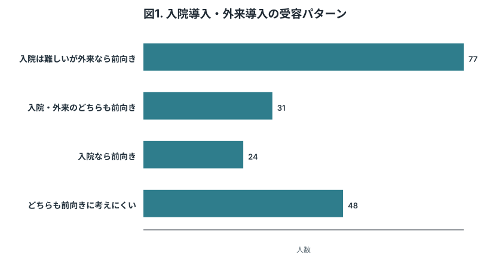
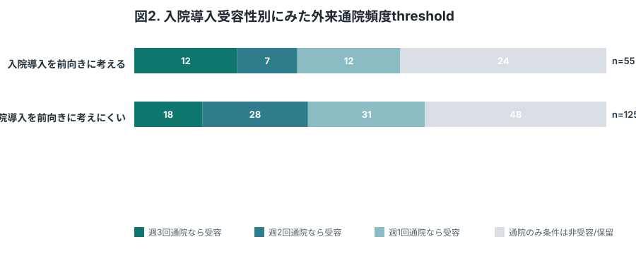
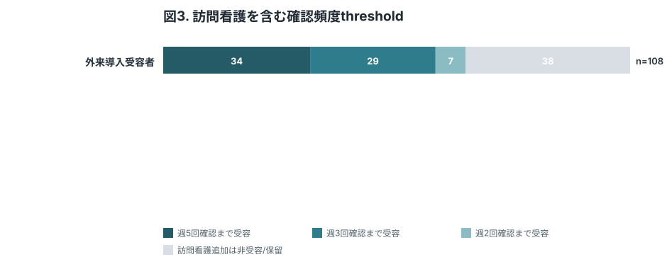
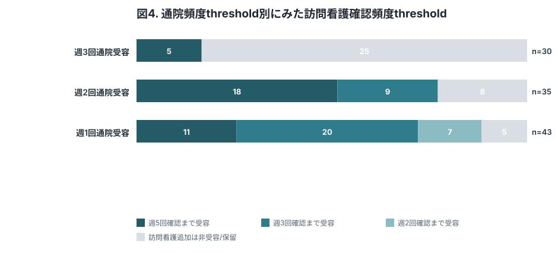
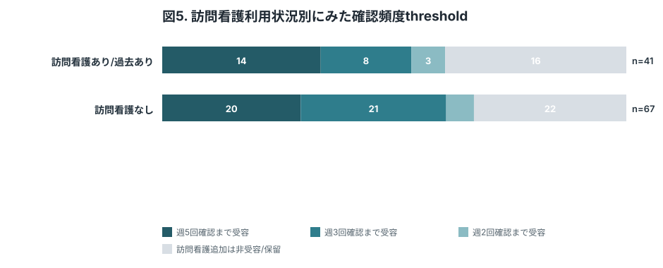
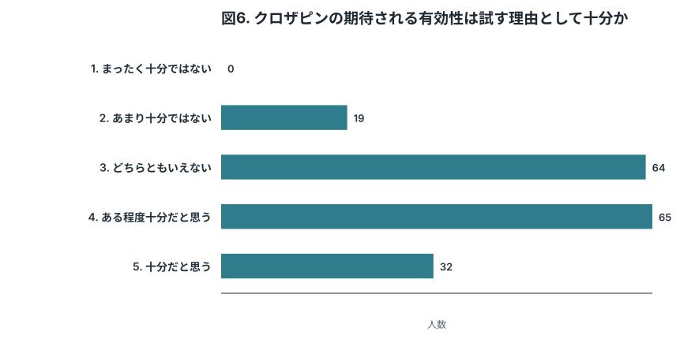
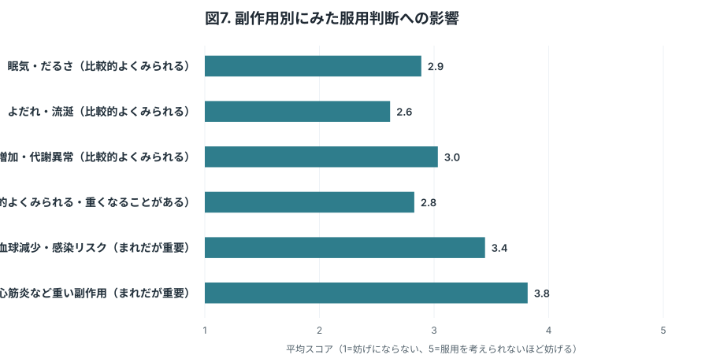
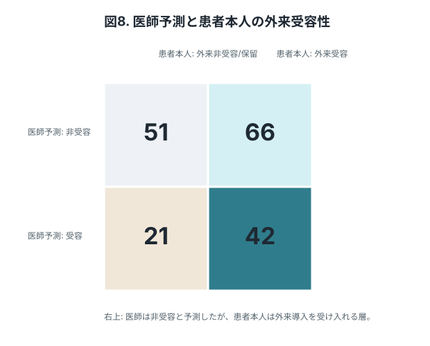
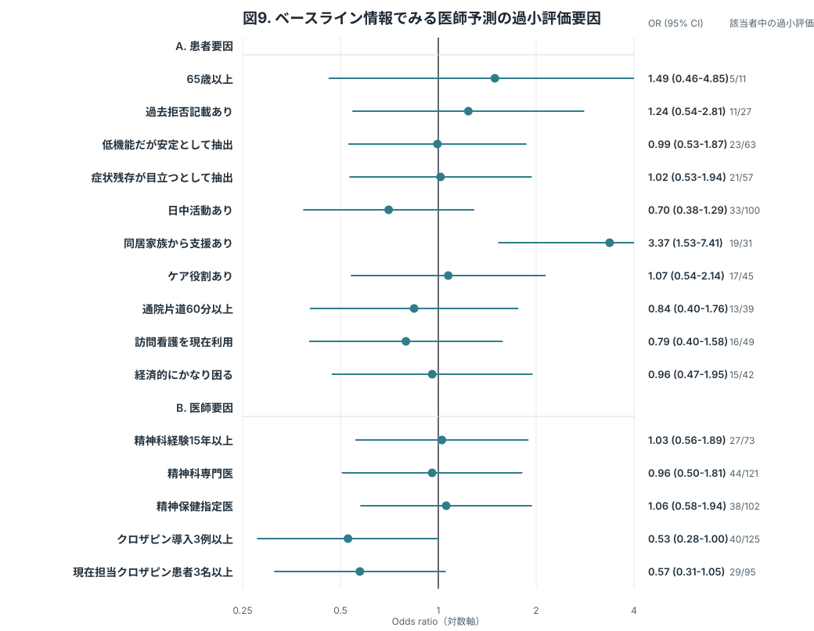

この版の考え方
DCEをやめ、入院導入・外来導入のvignette比較と外来負担閾値だけに絞った初期案。
- Hauber & Coulter 2020（PubMed）に従い、1つのkey attributeを外来導入burden packageとして順序化。
- Barrett 2005（PubMed）を参考に、benefit/harmを明示してから受容閾値を尋ねる構成に変更。
Table 1. 回答者背景
| 変数 | カテゴリ/統計量 | 中央値 (IQR) または n (%) |
|---|---|---|
| 解析対象者 | 合計 | 180 |
| 年齢 | 中央値 (IQR) | 48 (40-55) |
| 臨床家評価mGAF-F | 中央値 (IQR) | 45 (34-54) |
| 対象集団 | TRS適格候補 | 86 (47.8%) |
| 広い未使用外来患者 | 94 (52.2%) | |
| 回答前提 | 現在の状態で回答 | 68 (37.8%) |
| 将来TRS相当を想定して回答 | 112 (62.2%) | |
| mGAF-F 40以下 | 該当 | 68 (37.8%) |
| 非該当 | 112 (62.2%) | |
| 現在の治療で残る困りごと | あり | 114 (63.3%) |
| なし/軽度 | 66 (36.7%) | |
| 主観的困りごと/つらさ | あり | 90 (50.0%) |
| なし/軽度 | 90 (50.0%) | |
| 日中活動 | 就労中 | 26 (14.4%) |
| 就学中 | 4 (2.2%) | |
| 福祉的就労 | 32 (17.8%) | |
| デイケア等 | 38 (21.1%) | |
| 主に自宅 | 68 (37.8%) | |
| その他 | 12 (6.7%) | |
| 日中活動の頻度 | 週0-1日 | 22 (12.2%) |
| 週2-3日 | 44 (24.4%) | |
| 週4日以上 | 34 (18.9%) | |
| 該当なし | 80 (44.4%) | |
| 同居状況 | 一人暮らし | 56 (31.1%) |
| 家族等と同居 | 81 (45.0%) | |
| 施設・グループホーム | 27 (15.0%) | |
| その他 | 16 (8.9%) | |
| 同居家族からの支援 | 受けられる | 32 (17.8%) |
| 少し受けられる | 31 (17.2%) | |
| ほぼ受けられない | 18 (10.0%) | |
| 同居なし | 99 (55.0%) | |
| 本人のケア役割 | なし | 147 (81.7%) |
| 子どものケア | 8 (4.4%) | |
| 親・配偶者等のケア | 22 (12.2%) | |
| その他 | 3 (1.7%) | |
| 通院片道時間 | 30分未満 | 76 (42.2%) |
| 30-60分 | 68 (37.8%) | |
| 60-90分 | 29 (16.1%) | |
| 90分以上 | 7 (3.9%) | |
| 主な通院手段 | 自分で運転 | 37 (20.6%) |
| 公共交通 | 68 (37.8%) | |
| 家族送迎 | 32 (17.8%) | |
| 福祉交通・タクシー | 14 (7.8%) | |
| 徒歩・自転車 | 22 (12.2%) | |
| その他 | 7 (3.9%) | |
| 訪問看護の現在利用 | あり | 45 (25.0%) |
| 過去あり | 35 (19.4%) | |
| なし | 100 (55.6%) | |
| 主な収入源 | 就労収入 | 42 (23.3%) |
| 障害年金 | 71 (39.4%) | |
| 家族支援 | 31 (17.2%) | |
| その他 | 21 (11.7%) | |
| 答えたくない | 15 (8.3%) | |
| 経済的余裕 | 困っていない | 58 (32.2%) |
| 少し困る | 75 (41.7%) | |
| かなり困る | 39 (21.7%) | |
| 答えたくない | 8 (4.4%) |
患者本人の受容性を解釈するため、対象集団、現在の困りごと、主観的つらさを最小限の背景情報として置く。

回答前提別に、入院導入と外来導入の受容性を比較する中核図。外来導入受容性は抽象的なYes/Noではなく、週3/週2/週1通院条件のいずれかを受容した場合として定義する。mGAF-F 40以下の実意思決定に近い群と、将来TRS相当となった場合を想定する群を分けることで、企画倒れを避けつつ解釈可能性を保つ。Gee 2017（PubMed）やJakobsen 2025（PubMed）で入院導入が大きな障壁として示されたことを踏まえ、“入院は難しいが外来なら前向き”という潜在ニーズを可視化する。

入院導入を前向きに考える人と考えにくい人に分け、外来導入の通院頻度thresholdを示す中核図。入院導入を受け入れうる人でも外来週3回は難しい、あるいは入院導入は難しい人でも外来なら受容に転じる、といった現実的な選好のずれを示す。

外来導入を受容しうる人について、通院に訪問看護を加えた総確認頻度をどこまで受け入れられるかを示す図。安全に必要な頻度は医師が判断する前提で、その頻度を患者が受容可能かを直接把握する。

先に確定した通院頻度thresholdごとに、訪問看護を加えた確認頻度thresholdを示す図。週3回通院を受容する人、週2回なら受容する人、週1回なら受容する人で、追加モニタリングへの許容度が異なるかを確認する。

現在の状態で回答した群と、将来TRS相当を想定して回答した群で、訪問看護を含む確認頻度thresholdがどう異なるかを示す図。即時候補者と潜在ニーズ層の違いを分けて解釈するために置く。

クロザピンの期待される有効性が、患者本人にとって服用を試す理由としてどの程度十分と受け止められるかを示す図。副作用や通院負担だけでなく、そもそも提示されたbenefitが十分な価値として受け止められているかを確認する。

副作用は単一項目にまとめると解釈しにくいため、眠気、流涎、体重増加、便秘、採血異常・感染リスク、心筋炎などに分けて、服用判断をどの程度妨げるかを測定する。

患者調査を臨床家調査と接続する図。Jakobsen 2025（PubMed）の示唆に沿い、医師が非受容と想定する患者の中にも外来導入なら受け入れる層がいるかを示す。

図8で医師予測が患者本人の回答より保守的だったケースについて、どのような事前情報と関連するかを単変量ORで示す。説明変数は、年齢、mGAF-F、過去拒否記載、生活・通院・訪問看護・経済状況、医師の経験・資格・クロザピン経験など、調査回答の前または初期に容易に把握できるベースライン情報に限定する。入院導入・外来導入への意向、副作用懸念、有効性十分性、医師の推奨率・理由選択率など、患者や医師の判断そのものに近い情報は入れない。